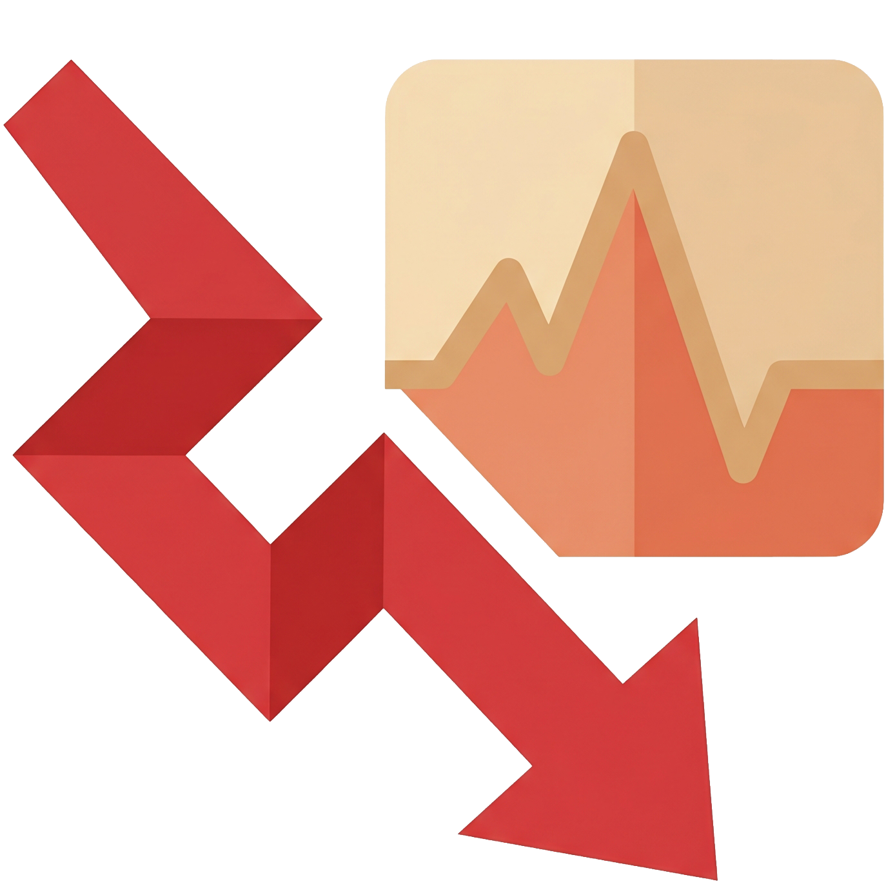
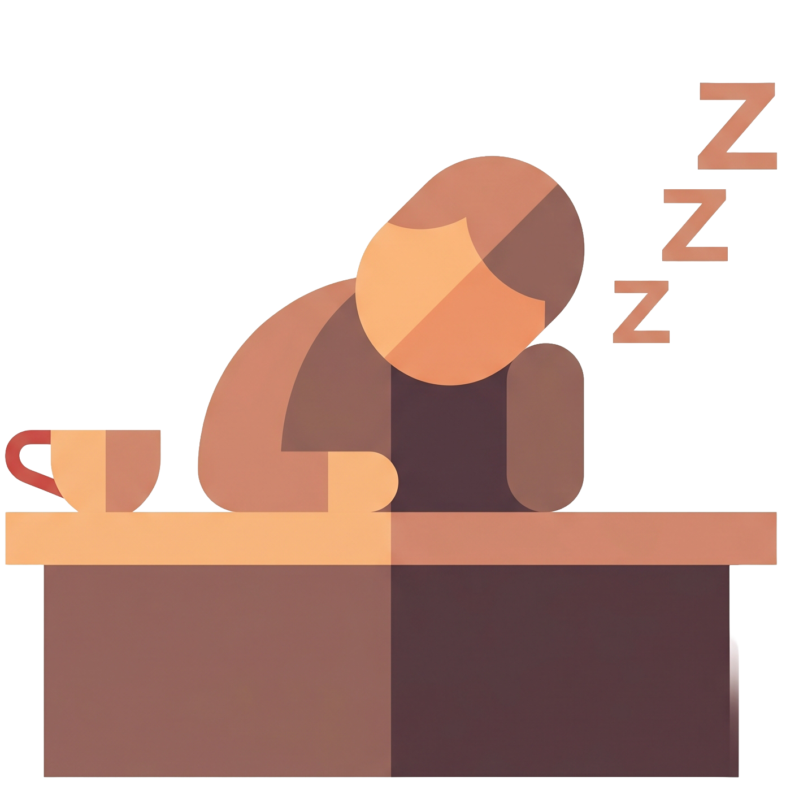
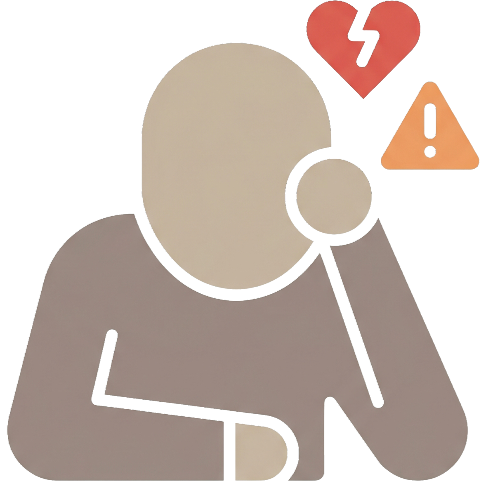

閲覧にはパスワードが必要です
がんばっているのに、午後になると頭が働かない。
年のせい、寝不足のせい。そう片づける前に。
原因は、お昼に食べた「あれ」かもしれません。
質問に答えるだけで、あなたの糖質疲労度が分かります
ひとつでも当てはまったら
黄色信号です。
原因は、食事による
血糖値の“乱高下”。
ごはんやパンをしっかり食べると、血糖値がぐんと上がります。 すると体はあわてて下げにかかり、今度は急降下。 このジェットコースターのような上下動が、食後の強い眠気やだるさ、集中力の低下を連れてきます。 これが「糖質疲労」です。
やっかいなのは、本人が気づきにくいこと。 「年のせい」「寝不足のせい」で片づけられがちです。 でも1日3回、食事のたびに同じことが起きています。
昼食のあと、ここまで上がる！

※ イメージ図。血糖値の変動には個人差があります。



北里研究所病院 糖尿病センター長
一般社団法人 食・楽・健康協会 代表理事
山田 悟やまだ さとる
あなたは大丈夫？
今すぐ1分でセルフチェック
10個の質問に答えるだけ。今のあなたの「糖質疲労度」が分かります。
登録不要・無料 糖質疲労チェックをはじめる※ 本チェックは医学的な診断ではありません。生活習慣を振り返るための簡易チェックです。